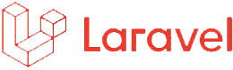
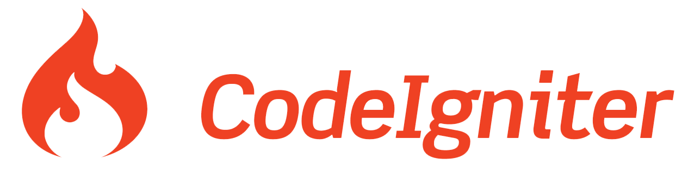
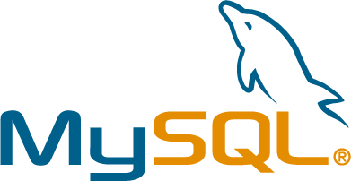
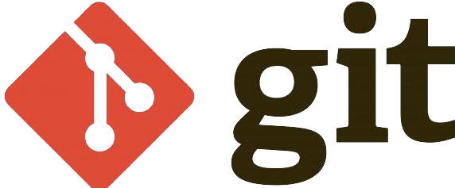
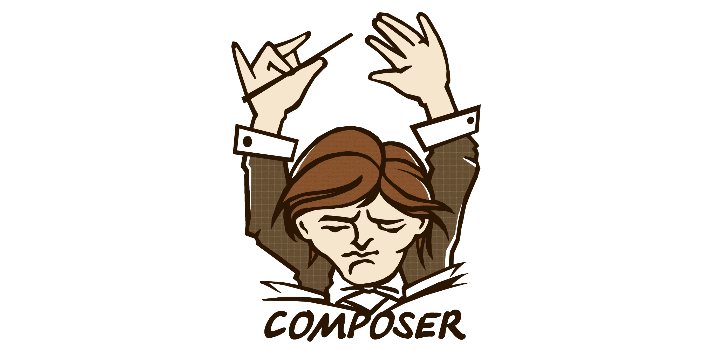
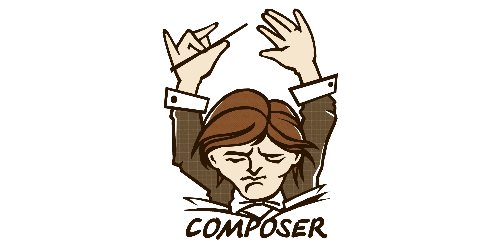

Skill Programming
Advance
Intermediate




 

Selamat datang diwebsite portfolio saya, Perkenalkan nama saya kriti mauludin. Seorang anak muda yang menekuni web programing.
geser ke / untuk info lain, klik untuk info detail
Skill set yang saya tekuni adalah web developer spesifik ke arah Backend, Untuk bahasa pemograman yang pertama dipelajari Bahasa Pascal.
geser ke / untuk info lain, klik untuk info detail
Setelah saya mulai memahami dasar dari pemograman, Saya bersyukur diberi kepercayaan untuk mengikuti beberapa perlombaan.
geser ke / untuk info lain, klik untuk info detail
Saya memiliki sertifikasi BNSP dengan role Junior Web Developer, sertifikasi ini dilakukan sebagai penunjang ketika terjun kedunia kerja.
geser ke / untuk info lain, klik untuk info detail
Saya melanjutkan studi S1 Ilmu Komputer di Universitas Pakuan Bogor. Dan saat ini saya sedang menempuh semester 5.
geser ke / untuk info lain, klik untuk info detail
Saya memiliki beberapa pengalaman profesional baik magang maupun problem solving diinstansi dengan tipe pekerjaan project base.
geser ke / untuk info lain, klik untuk info detail
Selain menulis kode dan mengerjakan tugas kampus, Saya aktif menulis dan membagikan sedikit ilmu melalui website Arahin Media Kreasi.
geser ke / untuk info lain, klik untuk info detail
Saya meyakini industri teknologi tidak akan pernah berakhir justru industri inilah yang akan mendominasi industri dimasa depan.
geser ke / untuk info lain, klik untuk info detail
Dari segi software : Peramban Web (chrome, edge, dll), Code Editor untuk melihat isi kodingan (VS Code, Sublime, dll)
Dari segi Hardware : PC atau Laptop, Disarankan menggunakan mouse untuk pengalaman scrolling yang lebih smooth
Saya menerapkan konsep single window with various content. Dimana semua informasi penting berada dihalaman paling atas dan terhighlight secara utuh.
Saya mengharapkan kemudahan penggunaan dimana yang dilakukan pengguna hanya 3 hal (scroll keatas, scroll kebawah dan klik)
Saya menemukan suatu website unik dan isi yang sangat menarik perhatian, website tersebut https://theyearofgreta.com/ dan akhirnya saya memutuskan untuk mengadopsi konsep yang sama diwebsite ini.
Nama saya Kriti Mauludin terbiasa dipanggil Kriti, Saya merupakan salah satu peserta lomba web design portfolio diibnu khaldun.Sedikit membahas tentang kota bogor. Saya lahir, bertumbuh di kota ini sampai dengan saat ini
Saya tidak terlalu aktif dalam mengikuti kegiatan kemahasiswaan. Tetapi saya mempunyai pengalaman yang sangat bermanfaat, yaitu menjadi anggota dalam penelitian terapan dilingkup internal Universitas Pakuan
Saya bertugas untuk mengimplementasikan model dan data akhir hasil penelitian menjadi suatu aplikasi berbasis website. Adapun judul penelitian ini “APLIKASI MODEL PENGENDALIAN STATUS KESIAGAAN TERHADAP KEMUNGKINAN PAPARAN COVID 19 PADA LINGKUNGAN TERTUTUP INDUSTRI”
Dikelas 12 saya merasa lebih mudah dalam menulis program karena utamanya seluruh bahasa pemograman mengacu pada dasar dan konsep yang sama.
Pada tahun itu juga saya bersyukur karena diberikan kepercayaan untuk mewakili sekolah untuk mengikuti perlombaan ‘Web Design di Universitas Negri Jakarta’, Biarpun hasilnya tidak maksimal tetapi saya mendapatkan pengalaman yang sangat berharga untuk bertemu orang orang yang memiliki kemampuan dan skill luar biasa.
Selanjutnya saya diberikan kesempatan kembali oleh guru saya untuk mewakili sekolah saya dalam lomba ‘Design Mobile APP Di AMIK Bogor’ dan alhamdulilah pada kesempatan kali ini saya bisa memberikan hasil yang maksimal dengan keluar sebagai juara 1 pada lomba tersebut
Ketika saya kelas 12 SMK, pada saat itu sekolah mewajibkan atau menjadikan sertifikasi sebagai salah satu syarat kelulusan. Dimana pada saat itu sertifikasi yang diambil adalah Junior Web Developer.
Adapun sertifikasi menjadi acuan seberapa jauh seseorang mengetahui serta menguasai bidang yang ditekuninya. Untuk sertifikasi Junior Web Developer yang saya miliki ini masih aktif hingga tahun 2024.
Universitas Pakuan, Bogor, IDN
Disini saya masih menjalani masa studi akademik hingga saya berhasil lulus dan mendapatkan gelar.
SMK INFOKOM, Bogor, IDN
Disini saya mempelajari bagaimana membangun serta membuat sebuah software dari perancangan hingga software siap digunakan
SMP Angkasa, Bogor, IDN
SMP angkasa adalah sekolah menengah pertama swasta yang berada dibawah organisasi TNI-AU dan terletak didekat Atang senjaya Bogor
SDN Cilendek 4, Bogor, IDN
Yaitu Sekolah yang saya pilih untuk menempuh Pendidikan ditingkat sekolah dasar.
WFH, Bogor, IDN
Universitas Pakuan, Bogor, IDN
WFH, Bogor, IDN
WFH, Bogor, IDN
Graha Pena, Bogor, IDN
Selain mengerjakan tugas kampus dan menulis koding. saya mengisi waktu luang untuk berbagi sedikit pengetahuan saya diwebsite yang saya buat bersama teman-teman saya.
Website tersebut adalah arahin, saya menulis artikel seputar teknologi dan mempublish buku yang dijadikan tugas ketika semester 1. Kujungi web tersebut jika dirasa bermanfaat silahkan bantu share ya.
Industri ini berjalan secara cepat dan segala inovasi-inovasi baru muncul dalam jarak waktu yang dekat. Saya sebagai orang yang bermimpi untuk terus berkarir diindustri ini hanya memiliki 2 pilihan, Terus belajar atau tertinggal.
Ini adalah halaman paling akhir, beruntung sekali saya ada orang yang membaca sampai sedetail ini. But, Terimakasih sudah mengunjungi halaman sederhana ini.